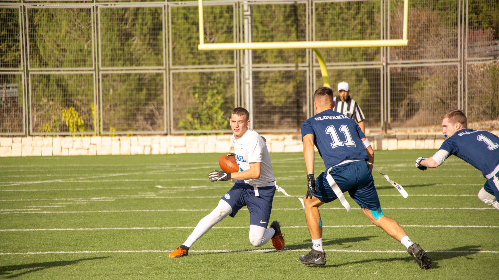

The MFFL, is a new flag football league based in Montreal, Quebec, that has been running strong since the
summer of 2019. The league was created by Matthew Reda and Seena Sabet-Kassouf in order to allow
young athletes a chance to stay in shape, compete and most importantly, have fun.
Every year our season begins the first week of July and runs a 10 week regular season, followed by playoffs.
All games are contested outdoors at both our beautiful locations with the possibility of moving indoors if we
run into terrible weather conditions.
MFFL provides players and teams with both offensive and defensive ratings, using our elaborate rating system
that varies between 50.0 and 100.0 for players and between 400 and 1500 for teams. For players, ratings are
determined based on individual skill, where as
for teams, we determine the rating by taking the adding of each players rating on said team.
Never resting on our laurels, each year the MFFL looks to add more value to its members, whether it be
additional English and French written content, league-wide general articles, the popular Game of the Week
videos; we deliver the goods to keep our members engaged throughout the week, and not just on game day.
The Montreal Flag Football League staff is made up of administrators, scorekeepers, media contributors and
officials. In addition, MFFL's voluntary committees (Disciplinary, Rules) are made up of both officials and
players in order to factor in the viewpoint and experiences of all parties involved in the league, and best
incorporate them into our rules and protocols.
At the end of the day, our mission is to help raise the bar of excellence in recreational sports leagues and
we need YOU to help us do that, so drop what you are doing and JOIN US
NOW!
Check out the highlights of last year's MFFL Final:

Another Week in the Books
Monday, July 11, 2022
This past Saturday was a great day for football. It wasn't extremely hot, and it wasn't too windy. Sunday, on
the other hand, was hot and humid with very little breeze in Montreal.
Last weekend we were blessed with countless amazing games that came down to wire and kept fans on the edge of
their seats! Weeks like these are why we are so excited for the future of this season cause if last week was
any indication, we are in for one heck of a year!
Canada Day has come and gone and do you know what that means? A new season of the MFFL has begun! This year
we promised big plays, amazing games and some unforgettable moments and my goodness, we got it all in just the
first week!
Every game was filled with non-stop action that left all of us wanting more. We saw new teams make their
debuts, new players making statements and most importantly, players having the time of their lives.
What a way to kick off a new season, this is truly the most wonderful time of the year!